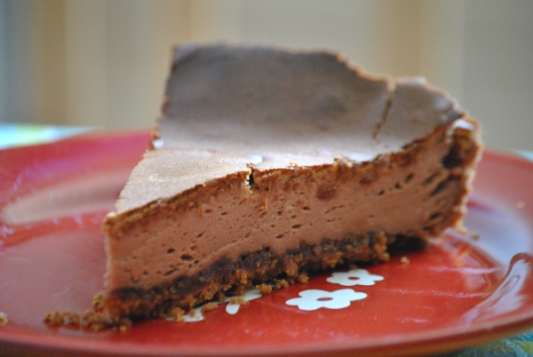

Schoko-Quark-Kuchen

- Für 1 Springform von 26 cm Durchmesser
- Zubereitung: ca. 25 Minuten
- Pro Portion: ca. 360 kCal
Zutaten
- 200 g Amarettini
- 180 g Butter
- 1 TL Espressopulver
- 100 g Zartbitterschokolade
- 3 EL Sahne
- 150 g Zucker
- 3 Eier
- 1 Päckchen Vanillepuddingpulver
- 250 g Frischkäse
- 250 g Magerquark
- Fett für die Springform
- Puderzucker zum Bestäuben
Zubereitung
- Die Form einfetten und den Backofen auf 175° Celsius vorheizen. Die Amarettini in einem Gefrierbeutel mit dem Nudelholz fein zerbröseln. Die Brösel mit 80g weicher Butter sowie dem Espressopulver mischen und auf den Boden der Form geben, leicht
andrücken.
- Die Schokolade in Stücke brechen und in einem Topf bei schwacher Hitze zusammen mit der Sahne schmelzen. Die restliche Butter mit Zucker, Schokolade und den Eiern verrühren. Das Puddingpulver, den Frischkäse und den Quark unterrühren.
- Die Quarkmischung auf den Teig geben. Im Ofen (unten, bei 160° Celsius Umluft) ca. 50 Minuten backen. Den abgekühlten Kuchen mit Puderzucker bestreuen.